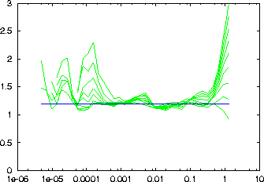

Determines the correlation sums of scalar time series in file(s). For each file, a file named file_c2 is produced, containing the distance and the correlation sum as its two columns. This file is re-written every time a new length scale is finished. Thus you may view intermediate results while th eprogram is still running. Fast neighbour search is applied.
-d delay
-M maximal embedding dimension
-t minimal time separation
-n minimal number of center points
-N maximal number of pairs (1000)
-# resolution, values per octave (2)
-r minimal length to be probed (as long as pairs found)
-R maximal length to be probed (xmax-xmin)
-l number of values to be read (all)
-x number of values to be skipped (0)
-c column to be read (1 or file,#)
-o output file name, just -o means file_c2
-V verbosity level (0 = only fatal errors)
-h show this message
Note: You will probably use one of the auxilliary programs c2d, c2t, or c2g to process the output further. See also example below.
Note: If all length scales and all centre points are asked for, the program is slower than the naive approach, c2naive.
Note: If the data is coarsely discretised, the program may be confused by many identical pairs. Since discretisation causes artifacts in the correlation sum anyway, add uniform noise of the size of a discretisation step to the data first, e.g. using addnoise.
> henon -l10000 > data > c2 -M10 -d1 -t50 -n500 data gnuplot> set logscale x gnuplot> set yrange [0:3] gnuplot> plot '< c2d -a2 data_c2', 1.2
